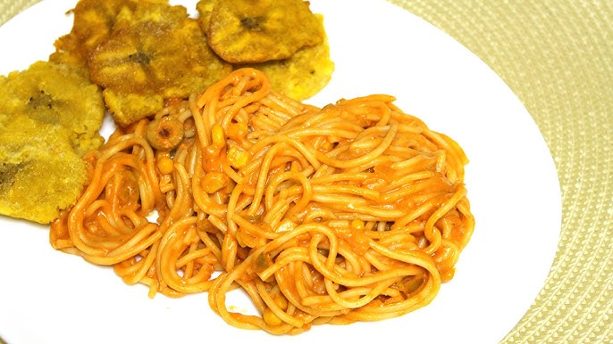

Spaghetti with Tostones Recipe

Description
This is a beautifully hand crafted dominican recipe. Loved by all & left fulfilled.
Budget friendly, easy to make, & delicious.
Ingredients
- Spaghetti
- Garlic
- Olive Oil
- Salt
- Black Pepper
- Parmesan Cheese
- Parsley
- Tostones (Fried Plantains)
- Red Pepper Flakes (optional)
- Lemon Juice (optional)
Steps
- Cook the spaghetti according to package instructions until al dente.
- While the spaghetti is cooking, heat olive oil in a pan over medium heat.
-
- Grab 2 platanos & cut the ends off. Only have the inside show slightly.
- Slice the platanos into 1-inch thick rounds.
- Fry the platanos in the pan until golden brown on both sides.
- Remove the platanos from the pan and flatten them with a tostonera or a meat hammer on flat surface.
- Return the flattened platanos to the pan and fry again until crispy.
- In the same pan, add minced garlic and sauté until fragrant.
- Drain the spaghetti and add it to the pan with garlic, tossing to coat.
- Season with salt, black pepper, and red pepper flakes if desired.
- Serve the spaghetti topped with grated Parmesan cheese, chopped parsley, and a squeeze of lemon juice if desired.
- Enjoy your spaghetti with crispy tostones on the side!